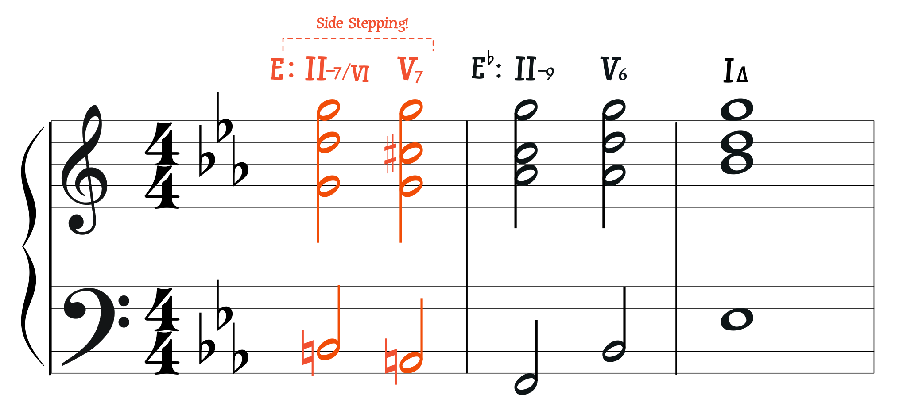

从本节开始，我们将真正昂首迈入唯有在“正统爵士理论”中才能领略的深水区秘境。
 1. 调内（Inside）与离调（Outside）
1. 调内（Inside）与离调（Outside）
一路行文至此，大家想必已经明白：爵士乐自始至终都有着极其坚实严密的理论支撑；即便在普通流行乐耳光听来仿佛跑调跑偏的诡异声响，在爵士体系中往往都有着明明白白的专属命名。
上例正是此前讨论音阶时介绍过的、运用“阶（Whole Tone Scale）”的演奏范例。这种奇谲的声响，在爵士理论体系中完全被收编为“理论上名正言顺的合法音响”。
然而在真实的实战中，大师们有时真的会彻底践踏理论秩序展开演奏。在与底层和弦发生刺耳正面冲撞的音阶上“明知故犯”地肆意弹奏——在真实的爵士现场中这完全是屡见不鲜的常态。在爵士理论中，将这种彻底游离于和声轨道之外的演奏统称为离调/游离演奏（Outside）；相对地，将恪守和声秩序的规范演奏称为调内/常规演奏（Inside）。
Outside 演奏在本质上意味着“没有常规理论背书的裸奔演奏”，因此要想让其听起来高级成立，极度考验演奏者卓绝的艺术审美与实战阅历。本次我们将引介其中最具代表性的经典 Outside 绝技。
2. 侧步进行（Side Stepping）
在众多 Outside 技法中，最为经典的招牌莫过于被称为**侧步进行（Side Stepping）**的绝学。它指的是：面对原本行进的和弦，故意将演奏音阶向上或向下平移展开演奏的挑衅行为 [1]。 毋庸置疑，这必然会诱发极其强烈的剧烈不协和；且由于仅仅错开了半音，一旦声部拿捏失当，极易被外行观众误以为是纯粹弹错音的演奏车祸。这完全是一门在钢丝悬崖边极致求索危险美学的“极限操作”。
C Dorian
这是一段全篇锁定在 Cm9 和弦、通篇以 C多利亚（C Dorian）音阶铺展的4小节极短样本。由于速度舒缓，萨克斯Solo吹到中段难免开始显露疲软与单调。为此，我们尝试仅仅在第3小节的后半段实施一次侧步进行（Side Stepping）：
C Dorian（加入 Side Stepping）
我们向“上方半音”实施了侧步跨越！由于本例处理得相当克制内敛，初听或许略难分辨，但正是这稍稍脱离原本音阶轨道的游离偏调，竟然散发出犹如布鲁斯般的粗粝骚灵质感，催生出了极其惊艳的独特韵味。
让我们在钢琴卷帘窗（Piano Roll）中将第3小节的细节进行横向对比：
未施加 S.S.

可以清晰看到，音符规规矩矩地严格紧扣着 C多利亚 音阶在游走。
施加 S.S.

反观这一边，旋律悍然跨入了 C♯多利亚 音阶的领地！大肆吹响还原B（B♮）与还原E（E♮），与伴奏深处的 Cm9 和弦发生了正面剧烈交火。然而正因为这只是稍纵即逝的一瞬间，反而作为极具冲击力的顶级“听觉调味料”大获成功。
细品钢琴卷帘窗便能洞察其深意：即使整体向半音上方侧步平移，新旧音阶之间其实依然暗藏着部分共同音，如何巧妙交织这些音符，正是拿捏 Inside 与 Outside 精妙平衡的精髓所在。若大张旗鼓长时间滞留不归，极易被听众判定为纯粹的弹奏失误，因此非超凡的分寸感不可驾驭。
实战范例
切特·贝克（Chet Baker）深情演绎的《Over The Rainbow》。主题段落结束后，请将全部注意力锁定在1:14起步的即兴SOLO上。在F大调语境中，贝斯手死死锚定在C音上构筑起 F/C 的属持续音（Dominant Pedal）。小号将“C-D-B♭”这一经典动机重复吹奏了两次；但在第3次出现时，乐句毫无征兆地悍然杀出了原调轨道！ 核对音高可以发现，他以“C♯-D♯-B”的形式，精准地将刚刚吹过的动机整体向上半音横移！在此瞬间，贝斯手依然在下方无比沉稳地死守着C音持续低音，因此在刻板乐理看来这完全属于不可理喻的“违章出界”。紧接着，大师穿插着A♭与B等调外变音，在调性极度朦胧游离的混沌时空中优雅徜徉良久。 在此场景中，将刚刚吹过的动机完全照搬平移是神来之笔——正因为动机形态高度对称一致，听众能瞬间顿悟这绝非演奏失误，而是大师精心编织的蓄意出格。
像这样，在真实的顶尖演奏中，处处充斥着公然践踏“全员必须在同一种音阶中和睦相处”这一乐理基石的狂暴演出，初见之下难免令人倒吸一口凉气：原来音乐竟然还能这么玩？！ 然而深究音乐理论的根本基石，始终不外乎“紧张与释放（Tension & Release）”。若站在宏观的全局视野审视：通过此类 Outside 游离演奏构筑极致的悬疑紧张，随后再从容优雅地滑回常规调性轨道完成终极释放——这何尝不是一门登峰造极、充满高级美感的新型和声建筑法呢？
3. 相邻二五进行（Contiguous ii-V）
然而，在乐队合奏中唯独某个人在SOLO中突然实施纯即兴的 S.S.，终究属于极度凶险的高危艺术行为。相较之下，一种更加可控且广受推崇的变体技法，是在作曲编曲的阶段，就预先在和弦骨架中埋入发生音级错位的二五进行。
IIIø VIo ♭III−7(13,-5) ♭VI7(-9) II−6 V7(-9) IΔ9
瞬间散发出了极其浓郁地道的纯正爵士味！当然，因为这已经是白纸黑字预先设计好的和弦骨架，性质上与现场即兴的 Outside 游离略有不同。
全曲宏观调性为C大调。全谱的核心题眼，在于半路杀出的 ♭III-7 → ♭VI7。这实际上是在原版二五进行的半音上方，强行执行了一轮属于 D♭调的二五进行！紧接着，整个乐队仿佛在心照不宣地打趣道：“哎呀走错路了！赶紧回原调～”，从而顺理成章地滑步归航回原初的C大调——极其幽默俏皮、灵动非凡的曲式编排😎
像这样，根音发生半音错位的连续二五进行紧密咬合串联，在伯克利方法论中被赋予了专属名称——相邻二五进行（Contiguous ii-V）。
实战范例
让我们看看 Contiguous ii-V 在真实爵士标准曲主题中是如何大显神通的：
此例极其直白洗练：在开篇瞬间便接连砸出两轮二五进行；第2轮忠实扎根于原调，而第1轮则不偏不倚正好浮动在其半音上方。整段音乐扑面而来的是一种仿佛开心得忘乎所以、整个人飘飘然腾空半空的狂喜跃动感。
另一首旷世名作——约翰·柯川的传奇之作《Moment’s Notice》，更是将其发挥到极致的传世典范：
这段极具辨识度的招牌主题中，在那经典的“哒-哒！哒-哒！”律动切分中，暗中疯狂执行着缜密的侧步进行。 听觉体验是如此丝滑浑然天成，以至于外行听众甚至以为全篇只是在循环往复同一个和弦；但若凝神细听，背后的和弦进行神乎其神！


在此处，小号在高声部始终固执地咬住同一组最高音（Top Note），给听众营造出一种“调性根本未曾发生变动”的精妙听觉障眼法。算无遗策，机关算尽！在即兴SOLO中乐手固然可以肆意放飞自我，但在构筑此类经典主题时，大师们在幕后所付出的精密编织由此可见一斑。
“Outside 离调游离演奏”的范畴当然远不止于侧步进行。例如在三全音代理的拓展中探讨过的“和弦反转为里和弦、而Solo旋律死守原音阶不放”，同样属于 Outside 的璀璨结晶。在不少高阶爵士理论书中，往往开辟专章浓墨重彩地深剖此类 Outside 秘籍，甚至在某种意义上，这片混沌的灰色地带才真正凝结着现代爵士理论最迷人的无上真髓。 不过本网站的核心使命，依然立足于对“Inside”常规理论体系的宏观俯瞰导引；若大家对此萌生了浓烈的好奇心，强烈推荐大家去研读那些更深水区的权威爵士专著。